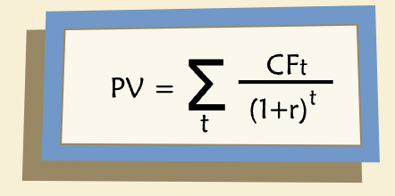

Risk and Return
Contents
Risk and Return¶
Considering basic DCF equation: 
“When the cash flows are known with certainty, the discount rate should be the risk-free rate of return, which can be designated as \(r_f\). In most business situations, however, future cash flows are uncertain as to both timing and amount. To handle risky cash flows, we need to modify the basic DCF equation. In the numerator, we use expected cash flow, denoted as \(E(CF_t)\). In the denominator, we use a discount rate, k, which includes a risk premium such that \(k > r_f\).”
Expected Cash Flow¶
“For risky future cash flows, we must consider the likelihood of different possible outcomes. We do this with a probability distribution that shows the probability of each possible cash flow outcome:”
“The expected cash flow is the probability-weighted average of all possible outcomes at a given future date. To calculate expected cash flow, we multiply the cash flow by the corresponding probability on the distribution curve and sum them.”
E(CF), Mean and Mode¶
“E(CF) differs from a simple unweighted average because we have multiplied each possibility by its probability of occurrence. A simple unweighted average is calculated by summing all values and dividing the total by the number of occurrences, ignoring probabilities. The mode is the value that occurs with the highest frequency — the most likely outcome.”
Skewed Distributions¶
“In business projects, one frequently encounters cash flow distributions that are skewed with long right “tails”. The skewed distribution is reflecting possibilities for high upsides and limited downsides — an attractive characteristic. But because the distribution is not symmetric, the mean and the mode will differ — that is, the expected outcome (mean) is higher than the most likely outcome (mode).”
Risk-Adjusted Discount Rates¶
The riskier project must have a lower price (in effect it must offer a higher expected return) or no one would invest in it. In other words, we expect the risk premium to be higher for risky projects.
Value Maximization and Opportunity Cost¶
“The goal of value maximization has important implications for k, our discount rate. To maximize value, we must use a discount rate equal to the opportunity cost of funds, sometimes called the opportunity cost of capital or simply the cost of capital.”
“The opportunity cost of capital is the expected return on an alternative investment with the same risk as the project under consideration.”
Implications¶
“Two important points come from the assumption of value maximization:”
For a value maximizer there is no such thing as “free” capital, even if someone is willing to give it to you free of charge.
For value maximizers, capital markets matter a great deal in the determination of k. Why? Because that’s where the “alternative investment with the same risk” comes from. Your set of alternative investments is, in effect, what we mean by “the capital markets.”
“The opportunity cost of capital cannot be zero and you should not use a discount rate of zero when you evaluate ideas for a new company. If you did, you would be willing to invest in anything! To maximize value, you must ask what return you could expect on other investments with the same risk as your new company.”
CAPM¶
“The Capital Asset Pricing Model (CAPM) was developed in the 1960s and is widely used in various forms today.”
“First we make some explicit assumptions about investors and investments:”
Investors’ goal is to maximize their wealth.
Investors are risk averse: they will prefer the less risky of two investment alternatives that are otherwise identical.
In choosing their investment portfolios, investors worry about both risk and expected returns (and nothing else).
Any risky investment can be described in terms of the risk it entails and the expected return it offers.
Returns on risky assets have normal (bell-shaped) probability distributions.
Risk & Expected Return For a Risky Asset¶
“Now picture a typical business investment, which we can think of as a risky asset. Instead of drawing the probability distribution for future cash flow, we’ll draw it in terms of future return on investment. (Note that the distribution of returns is implied by the distribution of future values.)”
“We can use the distribution of returns to identify two key characteristics of the asset: expected return (the mean of the distribution) and variance of returns (how spread out the distribution is). The latter is usually denoted by sigma squared, σ2. Variance is a measure of how uncertain the returns are; in other words, it measures risk.”
Measuring Volatility¶
“The mean, median, and mode of a distribution all convey information about center of the distribution, but none of these measures dispersion. In other words, how “spread out” the distribution is.”
“Variance is a probability-weighted measure of dispersion around the mean: the more spread out the distribution is, the higher the variance.”
“If we know the variance of a distribution of returns, we can easily convert it to the standard deviation of the distribution simply by taking the square root. In finance, this parameter is known as the volatility of returns (denoted as σ) and is used as a measure of risk.”
Two Risky Assets¶
Portfolio returns¶
If we consider 2 assets with different risk and return and we invest 50% in each, then the overall risk and return lie on the curve connecting two assets in the expected return vs risk graph and not on the straight line connecting those investments.
Covariance¶
“Formula for the variance of the sum of two random variables:”
“The standard deviation of the portfolio’s returns is then the square root of this expression.”
“It is often the case for two economic or financial variables that, even though both are random, they are related to one another. That is, there is a measurable tendency for both to take on high or low values at the same time, or for one to be high when the other is low. In such cases, they are said to “co-vary.” The relationship may be positive or negative and the tendency may be stronger or weaker. This relationship between two variables is called their covariance.”
“More formally, we define covariance as a numerical expression of the linear association between two variables. A positive (or negative) covariance indicates a positive (or negative) relationship.”
“Intuitively, you can think of plotting realized values for the random variables x and y on a graph. If you see an obvious “best-fit” straight line that could be drawn through the collection of points, then the two variables have a non-zero covariance. If the “best-fit” line slopes upward, the covariance is positive; if downward, covariance is negative. When there is no “best-fit” line, there is no linear relationship between the variables — we say they are independent of one another — and their covariance is zero.”
“The variance of x is the expected value of squared differences from the mean of x. The reason for squaring is to ensure that a given distance from the mean has the same effect on variance regardless of whether the actual value is above or below the mean.”
The slope of the best-fit line is related to covariance.
“The best-fit line is a regression line, and its slope will equal the ratio of the covariance of X and Y to the variance of X.”
Benefits of Diversification¶
“Now let’s return to our portfolios composed of assets A and B. Because A and B aren’t perfectly correlated, by investing some money in each, instead of 100% in one or the other, the investor benefits from the effect of diversification: Some of the randomness in A is offset by randomness in B.”
“The property of correlation is similar, intuitively, to covariance, and in fact there is a formal relationship. \(Cov(A,B)\) may be written as ρσAσB where \(σA\) denotes the standard deviation of A (and likewise for B) and \(ρ\) is the correlation coefficient for A and B, which is defined to be between 1.0 and -1.0. By manipulating the relationship just stated, we can see that the correlation between A and B, \(r\), must equal \(Cov(A,B)/σAσB.\)”
“The degree of benefit from diversification depends on the correlation between A and B. The lower the correlation between A and B, the lower the volatility of a portfolio comprised of A and B. You would expect that if A and B are perfectly correlated, there is no diversification: the two move together. When the correlation is less than 1, the volatility is reduced until you reach the minimum possible correlation of -1. When correlation is -1, A and B are perfectly negatively correlated and the volatility of one asset completely offsets that of the other, they are held in equal proportion.”
Many Risky Assets¶
“We call the set of leftover portfolios — those not eliminated by our simple rule — the Efficient Frontier. A wealth-maximizing investor would not hold any of the portfolios below the efficient frontier because it is possible to obtain higher returns for the same amount of risk by investing in portfolios along the frontier.”
“We can now give some concrete advice to an investor: Pick your portfolios from among those on the efficient frontier. Clearly any portfolio not on the frontier is suboptimal.”
“In the real world there are many risky assets, not just two. How does this affect the problem? It is certainly still the case that investors benefit from diversification. But there are many more possible combinations of securities to consider as potential portfolios. For a large number of risky assets, the set of all possible portfolios has a distinct shape — it looks like a broken eggshell.”
“If we could choose from among all these possible portfolios, which would we choose? We can eliminate most of them very easily. Here’s a simple rule: Eliminate any portfolio for which we can find an alternative that gives the same expected return for less risk or a greater expected return for the same risk.”
Adding the Risk-free Asset¶
“Because the riskless asset is riskless, it is not correlated with any of the risky asset portfolios. Therefore all combinations of the riskless asset and an efficient portfolio must lie on the straight line passing through the risk-free asset and the particular portfolio.”
“Whether this is the new efficient frontier depends on which point on the frontier of risky asset portfolios we choose to combine with the riskless asset. In other words, which efficient risky portfolio gives us the steepest line when connected to the riskless asset? The steepest line must be the tangent that passes through the riskless asset and the tangent point on the efficient frontier.”
“It turns out that the portfolio that defines the tangent is The Market Portfolio — that is, the portfolio that combines all available securities, each weighted according to its market value as a proportion of the value of the entire market.”
The Capital Market Line¶
“Each point on the line represents a portfolio derived by combining a specific proportion of the market portfolio and the riskless asset. Points in between the riskless asset (on the vertical axis) and the market portfolio correspond to buying some government bonds and some shares of the market portfolio, for example, shares in a market index fund. An investor with such a portfolio may be thought of as a lender: he or she is lending money to the government by buying government bonds.”
“What about points on the tangent line that lie on the other side of the market portfolio? These, too, can be reached by an investor. In our simple world, he or she would put all of his/her own funds into the market portfolio, and then borrow even more money and invest that in the market portfolio as well. The more he/she borrows, the farther out on the line is the resulting portfolio.”
“Special line that describes all the portfolios that could be formed by combinations of the market and either borrowing or lending at the risk-free rate is called the Capital Market Line (CML). The CAPM says wealth-maximizing investors should invest only in portfolios that lie on this line. Anything else is dominated by some portfolio on the CML.”
“The CML gives us another important piece of information. It tells us how much extra return an investor may expect when investing in a riskier, rather than a safer, portfolio: the slope of the CML gives the amount of extra return per unit of extra risk. Portfolios on the CML to the left of the market are less risky; those to the right are more risky. But every one of them has an expected return proportional to its risk, where risk is defined to be the standard deviation of portfolio returns.”
The Security Market Line¶
“Less correlation means more diversification. And the more diversification, the less portfolio risk. The stock that is less correlated with the market will have more of its volatility reduced by diversification when we put it in portfolio with the market.”
“what determines the risk premium for an individual stock is not its volatility, but rather how much of its volatility cannot be diversified away in a large portfolio. This is often referred to as “systematic risk” or “non-diversifiable risk.” Because investors cannot get rid of it simply by diversifying, they will demand a higher expected return for bearing it. This insight leads to another graph of risk and return, this time for individual securities, rather than efficient portfolios.”
“The CAPM has told us how to think about and measure risk: For a portfolio, we care about variance or standard deviation of the portfolio’s returns. For individual assets or securities we care about systematic risk: how much risk they contribute to the market portfolio. The CAPM also has told us that the price of risk is determined by the risk premium on the market portfolio. That means we should measure risk for an individual security relative to the market as a whole.”
“The risk of the market as a whole is simply the variance of returns on the market portfolio. We saw that an individual stock’s non-diversifiable risk is determined by its covariance with the market portfolio. Therefore a sensible measure of systematic risk for an individual stock should be the ratio of the two: covariance with the market over the variance of the market. This measure of (relative) systematic risk is called “beta”:”
The CAPM Equation¶
\(E(r_x)\) is the expected return on any risky asset \(x\).
\(r_f\) is the risk-free rate.
\(\beta_x\) is the beta of asset \(x\).
\(R_m - r_f\) is the equity market risk premium - the expected return on the market over and above the risk-free rate.
“Beta for asset x equals the ratio of its covariance with the market to the variance of the market.”

“Note that beta is a measure of relative risk. The β for the market as a whole is 1.0 by construction. [Recall that the covariance of the market with the market must equal the variance of the market. And the variance of the market divided by itself equals 1.0.] An asset that has β < 1 is less risky than the market and expected to move less than the market in response to a given shock. An asset with β > 1 is riskier than the market and expected to move more than the market.”
“Each stock’s beta measures a statistical tendency relative to market movements, not a guarantee.”
Using the CAPM Equation¶
“The risk-free rate is the return, in the current market, on a risk-free security whose duration matches the term of the expected cash flows to be discounted. In the United States, investors commonly use the yield to maturity on US government bonds as the risk-free rate.”
“How are betas estimated? From linear regression models. We regress realized excess returns on asset x, on the contemporaneous excess returns on the market. Excess return is the difference between the realized return and the risk-free rate. A broad market index, such as the S & P 500 is commonly used to represent “the market”. The coefficient from this linear regression equals the beta for asset x.”
“You probably would expect the betas of technology companies to be high. These companies operate in cyclical industries where revenues and cash flows tend to fluctuate greatly depending on economic conditions. Hence, they have high degrees of systematic risk and have betas above 1. By contrast, it makes sense that the betas of relatively mature and stable companies, such as Archer Daniels Midland (ADM), tend to be less than 1. ADM processes agricultural products such as soybeans and corn, and the demand for its products are somewhat less sensitive to economic conditions.”
“Betas are routinely calculated and published, and are widely available from commercial sources, such as Standard & Poor’s, Valueline and Bloomberg. It will seldom be necessary for you to run a regression to estimate your own betas.”
“The equity market risk premium (EMRP) is the expected return on the market portfolio over and above the risk-free rate, for the term of the cash flows to be discounted. In practice, this parameter may not be directly observed and so must be estimated.”
“Common ways of estimating the EMRP include statistical analysis of historical data on stock market returns; survey data on today’s investors’ expectations regarding future returns on the market; and returns implied by or inferred from current levels of market indices.”
Project Discount Rates¶
For companies whose betas are unknown, we try to find a publicly traded company with similar risk and use its beta in the calculation.
Costs of Debt and Equity¶
“A company’s suppliers of capital, as a group, must bear all of the risk of its operations. In other words, the riskiness of the securities a company issues to its investors must be the same, in the aggregate, as the riskiness of its operations. Put even more bluntly, all of the risk on the left side of the balance sheet must be borne by investors on the right side: lenders and shareholders.”
The Cost of Equity¶

Weighted Average Debt and Equity Costs¶
Dsicount rate can also be considered as Cost of Capital
” debt-free beta is sometimes called an “asset beta” or an “unlevered beta”.”
“Unlevered cost of capital is sometimes called the expected return on assets (denoted as “R-sub-assets”) or simply the “unlevered cost of equity.””

“This rate would be a good benchmark for a project of the company, and it doesn’t require us to find a target debt ratio or cost of debt for the company under consideration.”
The Weighted Average Cost of Capital¶
“Another common formulation of the cost of capital is called the “Weighted Average Cost of Capital,” or WACC, and it is given by this equation.”
“Notice that the weighted cost of debt is multiplied by (1-t) where t equals the tax rate. This modification is intended to reflect the fact that interest is tax-deductible.”
“So, what is the right discount rate? Rassets? The pre-tax cost of capital, Koperations (and we should note here that Koperations is also a weighted average and is sometimes even called the “pre-tax WACC”)? Or WACC? Since WACC is so widely used, and because the formula has some intuitive appeal, many people assume or assert that it is “correct.” But we should not be hasty. In fact, it is not always correct in a strict technical sense and may not even be preferable to other alternatives.”
“The reason for inserting “(1-t)” in the formula is to recognize that the deductibility of interest on the corporate tax return creates tax shields. But what if a project doesn’t actually give rise to any additional tax shields?”
“Perhaps because no incremental borrowing will occur as a result of it, or perhaps the corporation has no need for additional tax shields. Suppose, alternatively, that tax shields due to interest deductions have already been taken into account by other means, for example, we could create a schedule of such deductions and value them as a separate exercise. In that case the classic, familiar WACC equation might be double-counting the value of interest tax shields.”
“Finally, the standard WACC formula makes some other assumptions about tax rates, the form of deductions, capital structure, and costs of financial distress that are not trivial.”